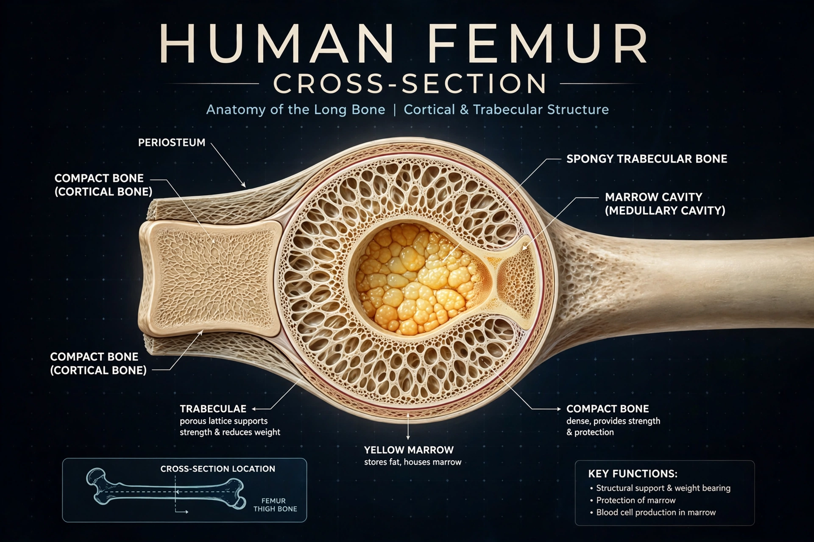

A bone is a rigid organ that constitutes part of the skeleton in most vertebrate animals. Bones protect the various other organs of the body, produce red and white blood cells, store minerals, provide structure and support for the body, and enable mobility. Bones come in a variety of shapes and sizes and have complex internal and external structures. They are lightweight yet strong and hard and serve multiple functions.
| Bone | |
|---|---|
 | |
| Part of | Skeleton |
| System | Skeletal system |
| Composition | ~30% collagen matrix, ~60% mineral (hydroxyapatite), water |
Bone tissue (osseous tissue) is a form of dense connective tissue. At the microscopic level it consists of cells embedded in a mineralized matrix of collagen fibres and calcium phosphate in the form of hydroxyapatite. Macroscopically, bones have a dense outer layer of cortical (compact) bone surrounding a porous interior of trabecular (spongy or cancellous) bone, which in many bones houses red bone marrow where blood cells are produced. A typical long bone has a shaft (diaphysis), ends (epiphyses), and a membrane (periosteum) covering its outer surface.
Four main cell types maintain bone: osteoblasts build new bone; osteocytes, mature cells embedded in the matrix, sense mechanical load; osteoclasts resorb bone; and osteoprogenitor cells serve as stem cells. Continuous remodelling by osteoblasts and osteoclasts replaces roughly 10% of the adult skeleton each year and regulates blood calcium.
Bones form by intramembranous ossification (flat bones such as the skull) or endochondral ossification (most bones, from a cartilage template). By shape, bones are classified as long, short, flat, irregular, and sesamoid. The adult human skeleton has 206 bones; infants have around 270, many of which fuse.
Disorders include fractures, osteoporosis (loss of bone density common in ageing), osteomyelitis (infection), rickets and osteomalacia (vitamin D deficiency), Paget's disease, and bone cancers such as osteosarcoma.
From Wikipedia, the free encyclopedia (recreated from memory).